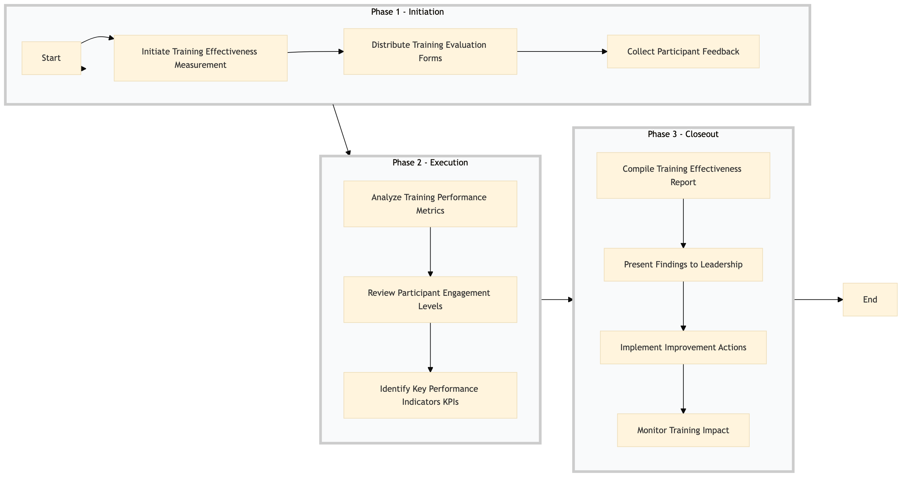

| Role | Steps |
|---|---|
| Learning & Development Manager | 1.1 3.1 3.2 3.3 3.4 |
| Learning & Development Specialist | 1.2 1.3 2.2 |
| Learning & Development Analyst | 2.1 3.4 |
| Step | Name | Role | System | Input | Output | KPI | Dec? | Exc? | Pain Point / Risk |
|---|---|---|---|---|---|---|---|---|---|
| 1.1 | Initiate Training Effectiveness Measurement | Learning & Development Manager | Oracle OPERA Cloud | Training session details | Measurement plan | Time to initiate measurement < 24 hours | N | N | Delays in initiating measurements can lead to missed opportunities for continuous improvement. |
| 1.2 | Distribute Training Evaluation Forms | Learning & Development Specialist | Oracle OPERA Cloud | Participant list | Sent evaluation forms | 90% response rate within 7 days | N | Y | Low response rates can skew the effectiveness data. |
| 1.3 | Collect Participant Feedback | Learning & Development Specialist | Oracle OPERA Cloud | Evaluation forms | Collected feedback data | Data collection complete within 7 days | N | Y | Delayed feedback can impact the timeliness of analysis. |
| 2.1 | Analyze Training Performance Metrics | Learning & Development Analyst | Oracle OPERA Cloud, IDeaS G3 RMS | Participant performance data | Performance analysis report | Analysis completed within 10 days | N | Y | Inaccurate performance data can lead to incorrect conclusions. |
| 2.2 | Review Participant Engagement Levels | Learning & Development Specialist | Oracle OPERA Cloud, Book4Time | Engagement logs | Engagement analysis report | Analysis completed within 10 days | N | Y | Low engagement can indicate ineffective training methods. |
| 2.3 | Identify Key Performance Indicators (KPIs) | Learning & Development Manager | Oracle OPERA Cloud, Microsoft Power BI | Performance and engagement data | KPI identification report | KPIs identified within 10 days | N | Y | Incorrect KPIs can lead to misguided improvement efforts. |
| 3.1 | Compile Training Effectiveness Report | Learning & Development Manager | Oracle OPERA Cloud, Microsoft Power BI | Analysis and KPI reports | Training effectiveness report | Report compiled within 10 days | N | Y | Delayed reporting can hinder decision-making. |
| 3.2 | Present Findings to Leadership | Learning & Development Manager | Oracle OPERA Cloud, Microsoft Teams | Training effectiveness report | Presentation slides | Presentation completed within 1 week | N | Y | Poor presentation can lead to misinterpretation of results. |
| 3.3 | Implement Improvement Actions | Learning & Development Manager | Oracle OPERA Cloud, Workday HCM | Training effectiveness report | Action plan | Actions implemented within 1 month | N | Y | Delayed implementation can reduce the impact of training improvements. |
| 3.4 | Monitor Training Impact | Learning & Development Analyst | Oracle OPERA Cloud, IDeaS G3 RMS | Action plan | Impact monitoring report | Monitoring completed within 1 month | N | Y | Inadequate monitoring can lead to missed opportunities for further improvement. |
This process measures the effectiveness of training programs at a Marriott full-service hotel by tracking participant feedback, performance metrics, and engagement levels.